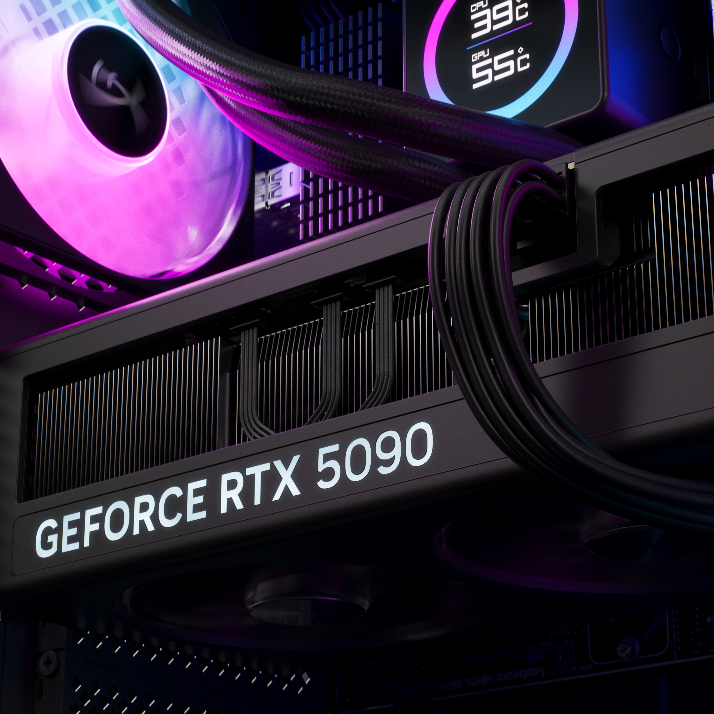

El Cloud Stinger siempre fue la opción para el jugador que quiere algo funcional sin gastar de más. Con el Stinger 3, HyperX le metió mano al punto débil histórico de la línea — la duración de la batería — y lo resolvió de manera contundente: 80 horas con una sola carga. Y el precio de arranque sigue siendo USD 49.99 para la versión con cable y USD 99.99 para la inalámbrica.
Ficha técnica
Drivers: 50mm con respuesta de frecuencia de 10Hz a 50kHz — lo mismo que encontrás en headsets de doble precio en otras marcas.
Conectividad: 2.4GHz inalámbrico de baja latencia más Bluetooth en la versión wireless. Podés tener el 2.4GHz para la PC y el Bluetooth para el teléfono al mismo tiempo.
Batería: 80 horas en la versión wireless. Para referencia, el Stinger 2 llegaba a 38. Es prácticamente el doble.
Peso: Diseño liviano con almohadillas de memory foam y estructura de acero inoxidable en los sliders.
Micrófono: Cancelación de ruido, con mute por swivel (girás el brazo hacia arriba y silencia).
Compatibilidad: PC, PS4, PS5, Xbox One/Series X|S, Switch y mobile.
Comparación con el Stinger 2 y los competidores
Respecto al Stinger 2, el salto más grande es la batería. En todo lo demás — drivers, micrófono, diseño general — el Stinger 3 es una evolución incremental. No reinventa la rueda, pero tampoco tiene que hacerlo a este precio.
Comparado con el SteelSeries Arctis Nova 7 Gen 2 (USD 200) o el HyperX Cloud Alpha 2 Wireless (USD 279), el Stinger 3 Wireless ofrece la mitad de batería (80h vs 54h y 250h respectivamente) y menos features premium como ANC activo o ajuste de audio por juego. Pero a la mitad o a la cuarta parte del precio, para el gamer que arranca o que juega casualmente, la ecuación es clara.
¿Para quién es?
El Cloud Stinger 3 Wireless a USD 99.99 es perfecto para el jugador que quiere dejar los cables sin gastar tres cifras altas. Si pasás más de 6 horas semanales jugando y no querés andar cargando el headset cada dos días, 80 horas de batería es un nivel de comodidad que antes costaba mucho más. No es para el competitivo serio que necesita latencia ultrabaja y micrófono de calidad de streaming — para eso hay otras opciones. Pero para el uso diario de plataformas múltiples, es de lo más completo que vas a encontrar en este precio.
Disponible desde el 30 de abril en HyperX.com y tiendas oficiales.